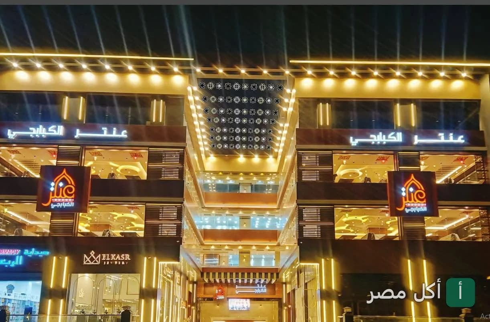

طاسة كبدة ومخاصي وكلاوي وكفته محمرة باللية
Pan seared lamb liver, kidneys, kofta & fries
390 جنيه
مشويات على الأصول. اختار طلبك من المنيو وكلمنا.

الأسعار بالجنيه المصري من صفحة أكل مصر (آخر تحديث معلن: ١١ أكتوبر ٢٠٢٦). أكد السعر مع المطعم عند الطلب. الأصناف المعروضة بدون سعر لم ينشر المصدر سعرا لها.
Pan seared lamb liver, kidneys, kofta & fries
390 جنيه
Half roasted chicken & potatoes
250 جنيه
Stuffed grape leaves & oxfeet tajin
350 جنيه
Lamb neck tajin
480 جنيه
Ground lamb with garlic yogurt sauce
295 جنيه
Braised lamb shoulder (Kilo)
1100 جنيه
Lamb shank served with fata rice
520 جنيه
Kofta dawood pasha
295 جنيه
Half roasted duck served with spiced rice
380 جنيه
Pan seared beef served with fata rice
280 جنيه
Rice stuffed pigeon
185 جنيه
Lamb neck served with fata rice
480 جنيه
Half pan seared chicken served with molokhia
250 جنيه
Lamb ribs with caramelized onion
470 جنيه
One grilled quail
160 جنيه
Oxfeet soup served with fata rice
280 جنيه
Gullash stuffed with duck
170 جنيه
Braised beef & okra
300 جنيه
Oxtail with spiced onion sauce
450 جنيه
Mossaka
220 جنيه
Braised beef & potatoes
300 جنيه
Beef with spiced onion sauce
300 جنيه
Mobkbka
300 جنيه
Sujuk & potatoes
250 جنيه
Braised beef & Freekeh
300 جنيه
Mummar Rice oven baked rice with milk
180 جنيه
Lamb sausage in tomato sauce
210 جنيه
Beef liver cutlets
150 جنيه
Calf liver in tahini sauce
150 جنيه
Mazalika chicken liver with pomegranate molasse
100 جنيه
Lamb sausage with pomegranate molasses
210 جنيه
BBQ lamb shoulder
1050 جنيه
BBQ turkey leg
400 جنيه
١/٢ ك كباب، ١/٢ ك كفتة، ١/٢ ك طرب، ١/٢ ك ريش، ١/٢ ك طاووق، ١/٢ ك صدور، ١/٢ ك كبدة، ١/٢ ك ممبار، ١/٢ ك محشي، ٢ حواوشي، ٢ ك أرز بسمتي
3700 جنيه
١/٢ كيلو كفتة، ١/٢ كيلو طرب، ١/٢ كيلو شيش، ١/٢ كيلو ممبار، ١/٢ كيلو كبده، سمبوسك جبنه، ١/٢ كيلو محاشي، ملوخية، خضار، ٢ شوربة حمام، ارز بسمتي بالزبيب
2200 جنيه
١/٤ كباب، ١/٤ ريش، ١/٤ طرب، ١/٤ كفته، ١/٤ ممبار مع ارز بسمتي
1500 جنيه
١/٤ ك كباب، ١/٤ ك كفتة، ١/٤ ك سجق مشوى، ١/٤ ك شيش طاووق، ١/٤ ممبار، ارز بسمتي
1100 جنيه
٦ قطع فراخ شيش، ١/٤ ممبار، ١/٤ كبده، ١/٤ سجق، ١/٤ محاشي، ١/٢ كيلو ارز بسمتي
900 جنيه
فرخة شيش، ١/٤ ممبار، ١/٤ مشكل، ١/٤ سجق، ١/٤ ورق عنب، سمبوسة جبنة، ١/٢ كيلو ارز بسمتي
1100 جنيه
110 جنيه
85 جنيه
100 جنيه
100 جنيه
75 جنيه
90 جنيه
90 جنيه
110 جنيه
90 جنيه
110 جنيه
90 جنيه
60 جنيه
90 جنيه
100 جنيه
90 جنيه
70 جنيه
65 جنيه
65 جنيه
95 جنيه
45 جنيه
290 جنيه
290 جنيه
290 جنيه
35 جنيه
60 جنيه
75 جنيه
75 جنيه
60 جنيه
80 جنيه
110 جنيه
290 جنيه
1600 جنيه
1700 جنيه
220 جنيه
1000 جنيه
720 جنيه
400 جنيه
450 جنيه
420 جنيه
1000 جنيه
1000 جنيه
Fruit de mare
290 جنيه
Shrimp Fajita Served with rice
375 جنيه
Mussels marinara
250 جنيه
Seafood pasta marinara or cream sauce
290 جنيه
Grilled crabs
600 جنيه
Fried mix sea food
350 جنيه
Shish fillet
200 جنيه
Butter and lemon salamon
Seafood pasta marinara or cream sauce
290 جنيه
Pallela
290 جنيه
Fish curry with vegetables
200 جنيه
بابا غنوج، باذنجان مخلل، مخلل مشكل، طماطم مخللة، طماطم حارة، سلطة خضراء، سلطة زبادي، بطاطس بالشبت، بنجر، مش، طحينة، حمص بالطحينة، راهب، ثومية، حمص خلطة
25 جنيه
تقدم مع اختيارك من بطاطس أو مكرونة أو أرز
110 جنيه
تقدم مع اختيارك من بطاطس أو مكرونة أو أرز
110 جنيه
تقدم مع اختيارك من بطاطس أو مكرونة أو أرز
155 جنيه
تقدم مع اختيارك من بطاطس أو مكرونة أو أرز
100 جنيه
الأصناف والأسعار من صفحة أكل مصر المنشورة. أكد تفاصيل طلبك والسعر مع المطعم عند الاتصال.